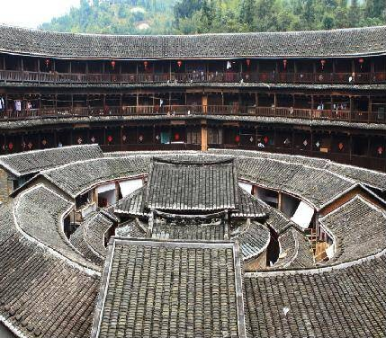
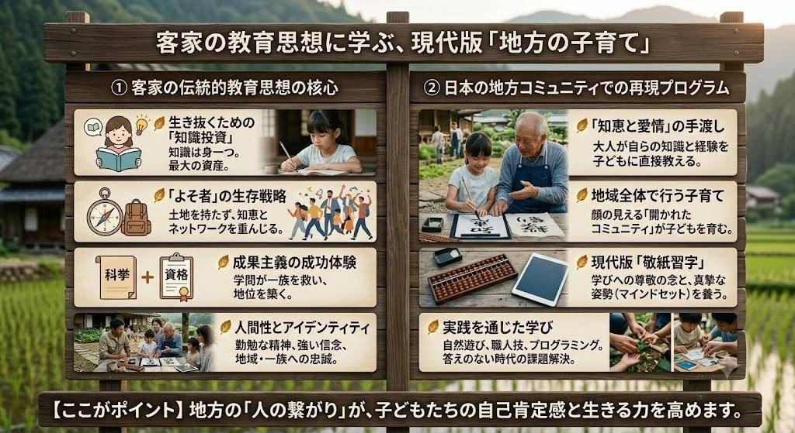

AIの台頭や予測不能な社会の変化の中で、「これからの時代、子どもにどんな教育を与えるべきか」とお悩みの方も多いのではないでしょうか。
実は、グローバル社会で目覚ましい活躍を見せる「客家（ハッカ）」の人々が実践してきた伝統的な教育スタイルには、現代の私たちが取り入れるべき学びの要素が凝縮されています。そして、その教育を実践するのに最も適した環境こそが「日本の地方都市・地域コミュニティ」です。
今回は、客家の教育思想から学ぶ次世代の子育てと、地方暮らしがもたらす教育的価値について解説します。
1. なぜ客家（ハッカ）は優秀な人材を輩出し続けるのか？
客家（ハッカ）とは、中国の漢民族の一派であり、歴史的な動乱を避けて北から南へと移住を繰り返してきた人々です。孫文、鄧小平、シンガポールの初代首相リー・クアンユー、台湾の元総統である李登輝など、歴史を動かした数々の指導者を輩出したことでも知られています。
土地や固定財産を持たない「よそ者（客）」として過酷な環境を生き抜いてきた彼らは、身一つで生き抜くための「知識」と「一族のネットワーク」を何よりも重視してきました。
客家が教育を重視する3つの背景
- 生き抜くための「知識投資」土地や財産は奪われる可能性がありますが、身につけた知識や教養は誰にも奪われません。教育は、過酷な環境で子どもたちが将来を切り拓くための「最大の投資」と位置づけられていました。
- 強力な互助ネットワーク移住先で結束を固めた客家コミュニティでは、教育を受けた優秀な人材が一族全体の発展を支える役割を果たしました。現代における「同郷・母校のネットワーク」の原型とも言えます。
- 成果主義の成功体験（科挙制度）歴史的に、知識によって官僚を目指す「科挙」の合格者を多く輩出しました。学問によって身分や環境を切り開けるという成功体験が、教育重視の文化を強固なものにしました。

2. 実践力と人間性を育む「客家流」教育法
単なる暗記教育ではなく、生きる力や人間性を育む点に客家の教育の真髄があります。
- 地域・一族全体で行う子育て「土楼」と呼ばれる集合住宅で暮らす客家では、家族だけでなく長老や地域全体で子どもを育てます。大人の背中や課題解決の現場を日常的に見ることで、社会性や常識が自然と身につきます。
- 文字や学びを敬う精神（敬紙習字）知識や文字に対する深い敬意を払う文化があり、学びに対する真摯な姿勢（マインドセット）を幼少期から養います。
- アイデンティティを形成する口承伝承独自の言葉や歌を通じて歴史や文化を継承し、困難に直面しても自分を見失わない強い「ルーツ意識（確固たる価値観）」を育みます。
- 生きた知恵を学ぶ体験型学習生活に必要な技能は大人の作業に直接参加しながら習得します。机上の空論ではない「現場で使える知識と課題解決力」を身につけさせます。
3. 現代の日本で「客家の教育」を実現できる場所とは？
都市部では近所付き合いが希薄化し、防犯上の理由からも「友達の家に気軽に上がる」「地域の大人から多様な技術を教わる」といった体験が得にくくなっています。
しかし、顔の見える関係性が残る「日本の地方」には、この客家流の教育を再現できる環境が残っています。
【大人が子どもへ「知恵と愛情」を届ける暮らし】地域の大人が飛び込みで子どもに陶芸や自然遊び、プログラミングや職人技などを教えてくれるような「開かれたコミュニティ」は、限られた環境（＝地方）だからこそ実現可能です。単に「勉強しなさい」と促すのではなく、大人が自らの知識や知恵を愛情とともに子どもへ手渡していく体験は、子どもの自己肯定感と生きる力を飛躍的に高めます。
まとめ：地方の新しい価値「地域全体が学び場になる教育コンテンツ」
AIが普及し、答えのない時代を迎えるこれからの社会において求められるのは、単なる知識の詰め込みではなく「実践的な知恵」「確固たるアイデンティティ」「人と繋がるコミュニケーション力」です。
誰がどこで何をしているかが分かる温かい地方の環境は、子どもたちにとって最高の学び舎となります。
地方の豊かな自然と人の繋がりを活かした「現代版・客家教育プログラム」こそが、これからの地域活性化における新しい魅力（コンテンツ）であり、次世代を建てる子育て世代への答えになると考えています。
